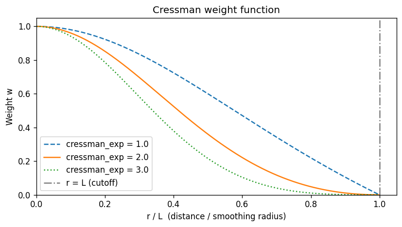
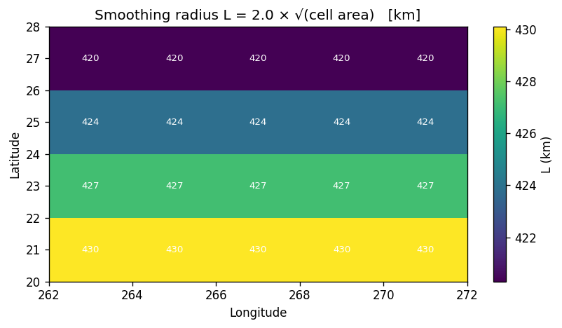
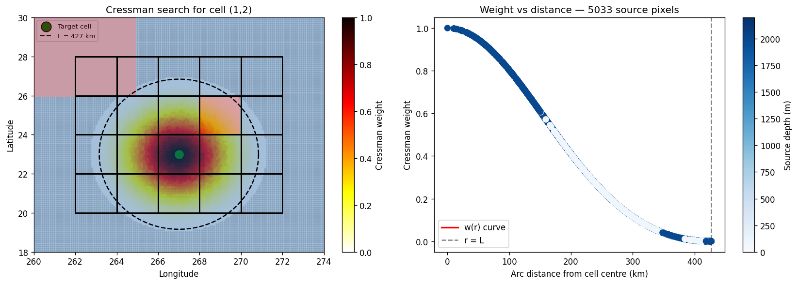
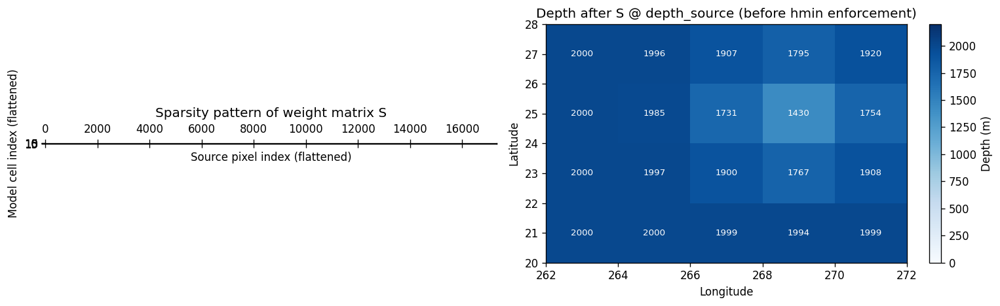
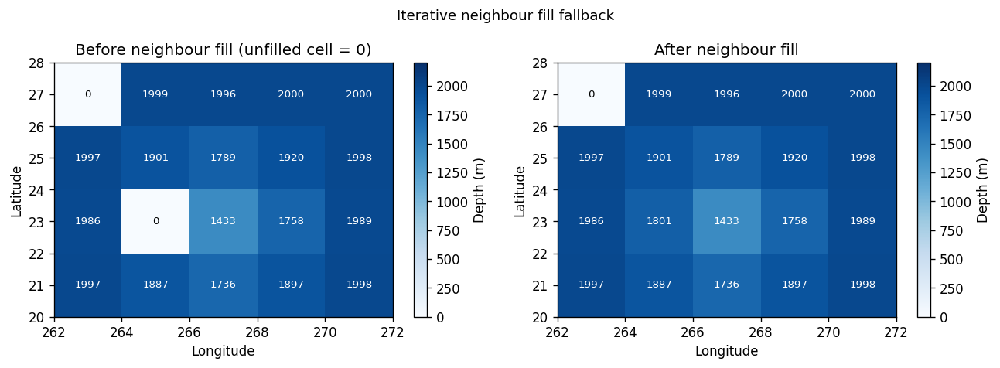
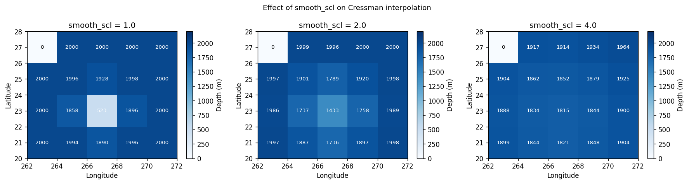

Cressman Interpolation Deep Dive
This notebook walks through the Cressman distance-weighted interpolation step that forms the core of the high-res pipeline. It mirrors the Fortran program append_topo_interp_smooth.f90 from the tx2_3 workflow.
What is Cressman interpolation?
For each ocean model T-cell, we want an estimate of the ocean depth by averaging nearby source pixels. But we don’t want to average blindly — pixels that are close to the cell centre should contribute more than distant ones. The Cressman weight function does exactly that:
where:
\(r_k\) is the great-circle distance from cell centre to source pixel \(k\)
\(L = \text{smooth\_scl} \times \sqrt{A}\) is the smoothing radius (\(A\) = cell area in m²)
\(c\) =
cressman_exp(default 2)
Only source ocean pixels within \(r_k \leq L\) contribute. The final depth estimate is:
[1]:
import numpy as np
import xarray as xr
import matplotlib.pyplot as plt
import matplotlib.patches as mpatches
from scipy.spatial import cKDTree
from pathlib import Path
import tempfile
from mom6_forge.grid import Grid
from mom6_forge.topo import Topo
plt.rcParams["figure.dpi"] = 120
[8]:
class FakeSrc:
"""A fake version of a database that stores data in memory."""
def __init__(self, path, da, lon, lat):
self.path = path
self.da = da
self.lon = lon
self.lat = lat
1. Setup
[91]:
grid = Grid(resolution=2.0, xstart=262.0, lenx=10.0, ystart=20.0, leny=8.0, name="toy")
src_lons = np.arange(260.0, 274.1, 0.1)
src_lats = np.arange(18.0, 30.1, 0.1)
src_lon2d, src_lat2d = np.meshgrid(src_lons, src_lats)
elevation = np.full(src_lon2d.shape, -2000.0) * -1
elevation[(src_lat2d > 26.0) & (src_lon2d < 265.0)] = -50.0
elevation[
(src_lat2d > 24.0) & (src_lat2d < 26.0) &
(src_lon2d > 268.0) & (src_lon2d < 270.0)
] = 80.0
tmp_dir = Path(tempfile.mkdtemp())
src_path = tmp_dir / "synthetic_bathy.nc"
ds = xr.Dataset(
{"elevation": (["lat", "lon"], elevation.astype("float32"))},
coords={"lon": src_lons, "lat": src_lats},
)
ds.to_netcdf(src_path)
topo = Topo(grid, min_depth=5.0, version_control_dir=tmp_dir)
topo.set_flat(1000)
src = FakeSrc(src_path, ds["elevation"], ds.lon, ds.lat)
print("Setup complete.")
Setup complete.
2. The Cressman weight function
Let’s first visualise \(w\) as a function of \(r/L\) to understand the shape.
[92]:
r_over_L = np.linspace(0, 1, 200)
fig, ax = plt.subplots(figsize=(7, 4))
for c_exp, ls in [(1.0, "--"), (2.0, "-"), (3.0, ":")]:
w = ((1 - r_over_L**2) / (1 + r_over_L**2)) ** c_exp
ax.plot(r_over_L, w, ls, label=f"cressman_exp = {c_exp}")
ax.axvline(1.0, color="gray", linestyle="-.", label="r = L (cutoff)")
ax.set_xlabel("r / L (distance / smoothing radius)")
ax.set_ylabel("Weight w")
ax.set_title("Cressman weight function")
ax.legend()
ax.set_xlim(0, 1.05)
ax.set_ylim(0, 1.05)
plt.tight_layout()
plt.show()

The weight is 1.0 at the cell centre (\(r=0\)) and 0.0 at the cutoff (\(r=L\)). Higher cressman_exp makes the function more peaked — more weight is given to nearby pixels, and the kernel decays more sharply.
3. Smoothing radius \(L\) for each cell
\(L = \text{smooth\_scl} \times \sqrt{A}\) where \(A\) is the T-cell area in m². This means larger cells get a larger search radius, which is physically correct — a coarser model cell should average over more source pixels.
The cell area DAREA used in the Fortran is equivalent to topo._grid.tarea.
[93]:
smooth_scl = 2.0
tarea = grid.tarea.values # cell area in m²
L = smooth_scl * np.sqrt(tarea) # smoothing radius in m
L_km = L / 1000.0
fig, ax = plt.subplots(figsize=(7, 4))
c = ax.pcolormesh(grid.qlon.values, grid.qlat.values, L_km,
cmap="viridis", shading="flat")
plt.colorbar(c, ax=ax, label="L (km)")
for j in range(grid.ny):
for i in range(grid.nx):
ax.text(grid.tlon.values[j,i], grid.tlat.values[j,i],
f"{L_km[j,i]:.0f}",
ha="center", va="center", fontsize=8, color="white")
ax.set_title(f"Smoothing radius L = {smooth_scl} × √(cell area) [km]")
ax.set_xlabel("Longitude")
ax.set_ylabel("Latitude")
plt.tight_layout()
plt.show()
print(f"L range: {L_km.min():.0f} – {L_km.max():.0f} km")
print(f"(decreases toward poles as cell area shrinks)")

L range: 420 – 430 km
(decreases toward poles as cell area shrinks)
4. The KDTree — finding source pixels within radius \(L\)
The Fortran uses a precomputed rectangular patch (iwid × jwid) as a bounding box and then tests each pixel in the box for \(r \leq L\). The Python implementation replaces this with a KDTree built from the 3D Cartesian coordinates of the source ocean pixels.
Why 3D Cartesian? Because cKDTree.query_ball_point uses Euclidean (chord) distance, which works globally without any longitude wraparound issues. The chord distance is then converted back to arc (great-circle) distance for the weight calculation.
[94]:
R = 6_371_000.0 # Earth radius, m
# Build the Cartesian coordinates of source ocean pixels
src_depth = src.da # positive-down; ocean > 0
src_lon_2d, src_lat_2d = np.meshgrid(src.lon, src.lat)
is_ocean_src = src_depth > 0
lon_src_rad = np.deg2rad(src_lon_2d.ravel())
lat_src_rad = np.deg2rad(src_lat_2d.ravel())
xyz_src_all = np.stack([
R * np.cos(lat_src_rad) * np.cos(lon_src_rad),
R * np.cos(lat_src_rad) * np.sin(lon_src_rad),
R * np.sin(lat_src_rad),
], axis=1)
# KDTree built ONLY over ocean source pixels
ocean_src_idx = np.where(is_ocean_src.values.ravel())[0]
tree = cKDTree(xyz_src_all[ocean_src_idx])
print(f"Total source pixels: {src_depth.size}")
print(f"Ocean source pixels in KDTree: {len(ocean_src_idx)}")
print(f" ({100*len(ocean_src_idx)/src_depth.size:.1f}% of source)")
Total source pixels: 17324
Ocean source pixels in KDTree: 15224
(87.9% of source)
[95]:
# For a chosen target cell, show which source pixels are within radius L
jc, ic = 1, 2 # choose a central ocean cell
lon_dst_rad = np.deg2rad(grid.tlon.values[jc, ic])
lat_dst_rad = np.deg2rad(grid.tlat.values[jc, ic])
xyz_dst = np.array([
R * np.cos(lat_dst_rad) * np.cos(lon_dst_rad),
R * np.cos(lat_dst_rad) * np.sin(lon_dst_rad),
R * np.sin(lat_dst_rad),
])
L_cell = smooth_scl * np.sqrt(float(grid.tarea.values[jc, ic]))
print(f"Cell ({jc},{ic}) at lon={grid.tlon.values[jc,ic]:.1f}, lat={grid.tlat.values[jc,ic]:.1f}")
print(f"Smoothing radius L = {L_cell/1000:.1f} km")
# query_ball_point returns indices into tree (= ocean_src_idx)
neighbor_tree_idx = tree.query_ball_point(xyz_dst, L_cell)
neighbor_src_idx = ocean_src_idx[np.asarray(neighbor_tree_idx)]
# Convert flat source indices back to 2D (lat, lon)
src_ny, src_nx = src_depth.shape
nbr_j = neighbor_src_idx // src_nx
nbr_i = neighbor_src_idx % src_nx
# Compute arc distances and weights for these neighbors
d_xyz = xyz_src_all[neighbor_src_idx] - xyz_dst
chord = np.linalg.norm(d_xyz, axis=1)
arc = 2.0 * R * np.arcsin(np.clip(chord / (2.0 * R), 0, 1))
d2 = arc**2
L2 = L_cell**2
weights = ((L2 - d2) / (L2 + d2)) ** 2.0
print(f"Source ocean pixels within L: {len(neighbor_src_idx)}")
print(f"Weighted depth estimate: {np.sum(weights * src_depth.values.ravel()[neighbor_src_idx]) / weights.sum():.1f} m")
Cell (1,2) at lon=267.0, lat=23.0
Smoothing radius L = 427.1 km
Source ocean pixels within L: 5033
Weighted depth estimate: 1899.5 m
[ ]:
fig, axes = plt.subplots(1, 2, figsize=(14, 5))
# --- Left: source pixels coloured by weight ---
ax = axes[0]
ax.pcolormesh(src_lons, src_lats, elevation, alpha=0.4, shading="auto", cmap="RdBu", vmin=-100, vmax=2200, zorder=19)
# All source ocean pixels (small grey dots)
ax.scatter(src_lon_2d.ravel()[ocean_src_idx],
src_lat_2d.ravel()[ocean_src_idx],
c="lightgray", s=2, zorder=0)
# Pixels within L coloured by weight
sc = ax.scatter(
src_lon_2d.ravel()[neighbor_src_idx],
src_lat_2d.ravel()[neighbor_src_idx],
c=weights, cmap="hot_r", vmin=0, vmax=1, s=30, zorder=5
)
plt.colorbar(sc, ax=ax, label="Cressman weight")
# Model cell outline and centre
ax.pcolormesh(grid.qlon.values, grid.qlat.values, np.zeros((grid.ny, grid.nx)),
edgecolors="k", linewidth=0.8, facecolor="none", shading="flat", zorder=20)
ax.scatter(grid.tlon.values[jc, ic], grid.tlat.values[jc, ic],
c="green", s=150, zorder=8, edgecolors="k", label="Target cell")
# Draw the search circle (approximate in lon/lat)
theta = np.linspace(0, 2*np.pi, 200)
deg_per_m = 1.0 / (R * np.pi / 180.0)
circ_lon = grid.tlon.values[jc, ic] + L_cell * deg_per_m * np.cos(theta)
circ_lat = grid.tlat.values[jc, ic] + L_cell * deg_per_m * np.sin(theta)
ax.plot(circ_lon, circ_lat, "k--", lw=1.5, label=f"L = {L_cell/1000:.0f} km", zorder=25)
ax.set_xlim(260, 274)
ax.set_ylim(18, 30)
ax.set_title(f"Cressman search for cell ({jc},{ic})")
ax.set_xlabel("Longitude")
ax.set_ylabel("Latitude")
ax.legend(fontsize=8)
# --- Right: weight vs distance scatter ---
ax = axes[1]
arc_km = arc / 1000.0
ax.scatter(arc_km, weights, c=src_depth.values.ravel()[neighbor_src_idx],
cmap="Blues", vmin=0, vmax=2200, s=50, zorder=5)
r_plot = np.linspace(0, L_cell / 1000, 200)
r_m = r_plot * 1000
w_curve = ((L2 - r_m**2) / (L2 + r_m**2))**2
ax.plot(r_plot, w_curve, "r-", lw=2, label="w(r) curve")
ax.axvline(L_cell/1000, color="gray", linestyle="--", label="r = L")
ax.set_xlabel("Arc distance from cell centre (km)")
ax.set_ylabel("Cressman weight")
ax.set_title(f"Weight vs distance — {len(neighbor_src_idx)} source pixels")
ax.legend()
sm = plt.cm.ScalarMappable(cmap="Blues", norm=plt.Normalize(0, 2200))
plt.colorbar(sm, ax=axes[1], label="Source depth (m)")
plt.tight_layout()
plt.show()
/glade/derecho/scratch/manishrv/tmp/ipykernel_79651/1012235770.py:38: UserWarning: Legend does not support handles for QuadMesh instances.
See: https://matplotlib.org/stable/tutorials/intermediate/legend_guide.html#implementing-a-custom-legend-handler
ax.legend(fontsize=8)

5. The sparse weight matrix
Rather than running the Cressman loop per cell at regrid time, compute_cressman_weights builds the entire weight matrix S upfront as a sparse CSR matrix of shape (n_dst, n_src). Applying the regrid is then just a sparse matrix-vector multiply:
depth_model_flat = S @ depth_source_flat
This matrix is also written to an ESMF-compatible netCDF so it can be cached and reused (e.g. for different fields or time steps).
[97]:
from mom6_forge.mapping import compute_cressman_weights
# --- Regrid via mapping module (weights → file → cressman Regridder) ---
src_ds = xr.Dataset(
{
"lon": (["lon"], src.lon.data),
"lat": (["lat"], src.lat.data),
"depth": (["lat", "lon"], src.da.data),
}
)
dst_ds = xr.Dataset(
{
"lon": topo._grid.tlon,
"lat": topo._grid.tlat,
"area": topo._grid.tarea,
"mask": topo.tmask,
}
)
ds_weights= compute_cressman_weights(
src_ds,
dst_ds)
print(f"S shape: {ds_weights.S.shape} (n_dst × n_src)")
print(f"Unfilled cells: {ds_weights.unfilled.sum()} (will use neighbour fill fallback)")
S shape: (87880,) (n_dst × n_src)
Unfilled cells: <xarray.DataArray 'unfilled' ()> Size: 8B
array(0)
Attributes:
long_name: True for ocean destination cells with no source points within... (will use neighbour fill fallback)
[98]:
import scipy.sparse as sp
# Reconstruct sparse matrix from xesmf weight file (1-based indexing → 0-based)
row = ds_weights["row"].values - 1
col = ds_weights["col"].values - 1
data = ds_weights["S"].values
n_dst = ds_weights.dims["n_dst"] # 20 — matches grid.ny * grid.nx
n_src = src.da.values.ravel().shape[0]
S_sparse = sp.coo_matrix((data, (row, col)), shape=(n_dst, n_src)).tocsr()
# Visualise
fig, axes = plt.subplots(1, 2, figsize=(13, 4))
ax = axes[0]
ax.spy(S_sparse, markersize=0.5, color="steelblue")
ax.set_xlabel("Source pixel index (flattened)")
ax.set_ylabel("Model cell index (flattened)")
ax.set_title("Sparsity pattern of weight matrix S")
# Apply S to get depth estimates
depth_source_flat = np.nan_to_num(src.da.values.ravel().astype(float))
depth_dst_flat = S_sparse @ depth_source_flat
depth_dst = depth_dst_flat.reshape(grid.ny, grid.nx)
ax = axes[1]
c = ax.pcolormesh(grid.qlon.values, grid.qlat.values, depth_dst,
cmap="Blues", vmin=0, vmax=2200, shading="flat")
plt.colorbar(c, ax=ax, label="Depth (m)")
for j in range(grid.ny):
for i in range(grid.nx):
ax.text(grid.tlon.values[j, i], grid.tlat.values[j, i],
f"{depth_dst[j, i]:.0f}",
ha="center", va="center", fontsize=8,
color="white" if depth_dst[j, i] > 500 else "k")
ax.set_title("Depth after S @ depth_source (before hmin enforcement)")
ax.set_xlabel("Longitude")
ax.set_ylabel("Latitude")
plt.tight_layout()
plt.show()
/glade/derecho/scratch/manishrv/tmp/ipykernel_79651/3312153172.py:8: FutureWarning: The return type of `Dataset.dims` will be changed to return a set of dimension names in future, in order to be more consistent with `DataArray.dims`. To access a mapping from dimension names to lengths, please use `Dataset.sizes`.
n_dst = ds_weights.dims["n_dst"] # 20 — matches grid.ny * grid.nx

[87]:
print(ds_weights.dims)
FrozenMappingWarningOnValuesAccess({'n_s': 83499, 'n_dst': 20})
6. Iterative neighbour fill
Some ocean cells may have no source ocean pixels within radius \(L\) — typically very small coastal cells. For these, we fall back to averaging from filled neighbours, iterating up to 100 times until all ocean cells have a value.
This is the Python equivalent of the Fortran fallback loop at lines 463–490 of append_topo_interp_smooth.f90.
[10]:
# Simulate a case with an unfilled cell by zeroing it out manually
depth_with_gap = depth_dst.copy()
mask_2d = mask.values.astype(bool)
unfilled_2d = unfilled.reshape(grid.ny, grid.nx) & mask_2d
# For demonstration, manually introduce an unfilled ocean cell
if int(mask.values[1, 1]) == 1:
unfilled_demo = unfilled_2d.copy()
unfilled_demo[1, 1] = True
depth_with_gap[1, 1] = 0.0
else:
unfilled_demo = unfilled_2d.copy()
depth_filled = depth_with_gap.copy()
iterations_needed = 0
for iteration in range(100):
if not unfilled_demo.any():
break
filled_f = (~unfilled_demo).astype(float)
d_pad = np.pad(depth_filled, 1, mode="edge")
f_pad = np.pad(filled_f, 1, mode="constant", constant_values=0)
d_nbr = (d_pad[:-2,1:-1] + d_pad[2:,1:-1] +
d_pad[1:-1,:-2] + d_pad[1:-1,2:])
f_nbr = (f_pad[:-2,1:-1] + f_pad[2:,1:-1] +
f_pad[1:-1,:-2] + f_pad[1:-1,2:])
can_fill = unfilled_demo & (f_nbr > 0)
depth_filled = np.where(can_fill, d_nbr / np.maximum(f_nbr, 1), depth_filled)
unfilled_demo = unfilled_demo & ~can_fill
iterations_needed = iteration + 1
print(f"Iterations needed: {iterations_needed}")
fig, axes = plt.subplots(1, 2, figsize=(11, 4))
for ax, data, title in [
(axes[0], depth_with_gap, "Before neighbour fill (unfilled cell = 0)"),
(axes[1], depth_filled, "After neighbour fill"),
]:
c = ax.pcolormesh(grid.qlon.values, grid.qlat.values, data,
cmap="Blues", vmin=0, vmax=2200, shading="flat")
plt.colorbar(c, ax=ax, label="Depth (m)")
for j in range(grid.ny):
for i in range(grid.nx):
ax.text(grid.tlon.values[j,i], grid.tlat.values[j,i],
f"{data[j,i]:.0f}",
ha="center", va="center", fontsize=8,
color="white" if data[j,i] > 500 else "k")
ax.set_title(title)
ax.set_xlabel("Longitude")
ax.set_ylabel("Latitude")
plt.suptitle("Iterative neighbour fill fallback", fontsize=11)
plt.tight_layout()
plt.show()
Iterations needed: 1

7. Putting it all together: cressman_interp
[11]:
weights_path = tmp_dir / "cressman_weights.nc"
topo.cressman_interp(src, mask, smooth_scl=2.0, cressman_exp=2.0, weights_path=weights_path)
# Compare smooth_scl values
results = {}
for smooth_scl in [1.0, 2.0, 4.0]:
t = Topo(grid, min_depth=5.0, version_control_dir=tmp_dir)
t.set_flat(1000)
wp = tmp_dir / f"weights_{smooth_scl}.nc"
t.cressman_interp(src, mask, smooth_scl=smooth_scl, weights_path=wp)
results[smooth_scl] = t.depth.values.copy()
fig, axes = plt.subplots(1, 3, figsize=(15, 4))
for ax, (sscl, depth) in zip(axes, results.items()):
c = ax.pcolormesh(grid.qlon.values, grid.qlat.values, depth,
cmap="Blues", vmin=0, vmax=2200, shading="flat")
plt.colorbar(c, ax=ax, label="Depth (m)")
for j in range(grid.ny):
for i in range(grid.nx):
ax.text(grid.tlon.values[j,i], grid.tlat.values[j,i],
f"{depth[j,i]:.0f}",
ha="center", va="center", fontsize=8,
color="white" if depth[j,i] > 500 else "k")
ax.set_title(f"smooth_scl = {sscl}")
ax.set_xlabel("Longitude")
ax.set_ylabel("Latitude")
plt.suptitle("Effect of smooth_scl on Cressman interpolation", fontsize=11)
plt.tight_layout()
plt.show()
Computing Cressman weights…
Cressman weights written to /glade/derecho/scratch/manishrv/tmp/tmppx1l48md/cressman_weights.nc
/glade/work/manishrv/conda-envs/mom6_forge/lib/python3.14/site-packages/xesmf/backend.py:42: UserWarning: Input array is not F_CONTIGUOUS. Will affect performance.
warnings.warn('Input array is not F_CONTIGUOUS. ' 'Will affect performance.')
Computing Cressman weights…
Cressman weights written to /glade/derecho/scratch/manishrv/tmp/tmppx1l48md/weights_1.0.nc
/glade/work/manishrv/conda-envs/mom6_forge/lib/python3.14/site-packages/xesmf/backend.py:42: UserWarning: Input array is not F_CONTIGUOUS. Will affect performance.
warnings.warn('Input array is not F_CONTIGUOUS. ' 'Will affect performance.')
Computing Cressman weights…
Cressman weights written to /glade/derecho/scratch/manishrv/tmp/tmppx1l48md/weights_2.0.nc
/glade/work/manishrv/conda-envs/mom6_forge/lib/python3.14/site-packages/xesmf/backend.py:42: UserWarning: Input array is not F_CONTIGUOUS. Will affect performance.
warnings.warn('Input array is not F_CONTIGUOUS. ' 'Will affect performance.')
Computing Cressman weights…
Cressman weights written to /glade/derecho/scratch/manishrv/tmp/tmppx1l48md/weights_4.0.nc
/glade/work/manishrv/conda-envs/mom6_forge/lib/python3.14/site-packages/xesmf/backend.py:42: UserWarning: Input array is not F_CONTIGUOUS. Will affect performance.
warnings.warn('Input array is not F_CONTIGUOUS. ' 'Will affect performance.')

Higher smooth_scl averages over more source pixels — useful for very coarse grids but can smooth out real bathymetric features. The tx2_3 default is smooth_scl=2.0.
Summary
The Cressman pipeline in Python:
Convert source ocean pixels to 3D Cartesian — enables correct great-circle distance without wraparound issues
Build ``cKDTree`` on ocean pixels only —
O(log n)radius queries instead of rectangular patch searchFor each ocean model cell: query all source pixels within
L, compute Cressman weights, normaliseAssemble sparse matrix ``S`` — apply as
S @ depth_sourcefor fast regriddingWrite weights to ESMF netCDF — can be cached and reused
Iterative neighbour fill — fallback for cells with no source coverage
Enforce ``hmin`` — shallow ocean cells clamped to
min_depth
Next: 11_full_scale_example.ipynb — production workflow with real GEBCO data.